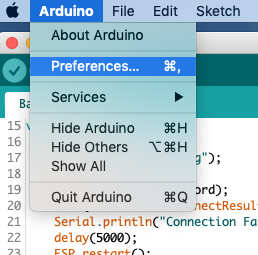

Upload Over The Air (bug?)
Let op!
Deze pagina is niet meer relavant omdat de DSMRloggerWS firmware vanaf versie 0.4.2 gebruik maakt van een upload pagina in de firmware zelf!Voor je eigen gemak raad ik je aan het deel over het vaste `build pad` wel te lezen en uit te voeren zodat je altijd makkelijk weet waar je nieuw gecompileerde firmware staat!
Het lijkt erop dat er een bug zit in de toolchain van de ArduinoIDE
voor wat betreft het Over The Air uploaden van omvangrijke Firmware.
Als je probeert om de DSMRloggerWS firmware via de ArduinoIDE te uploaden krijg je consequent een popUp window te zien waarin gevraagd wordt een password in te voeren:

Waarna, wat je ook klikt of invult, je de volgende foutmelding in de ArduinoIDE te zien krijgt:

.. en het verhaal stopt.
Het popUp window is een bekend fenomeen in de Arduino wereld omdat het in verschillende situaties voor kan komen. Helaas wordt er nergens een échte oplossing gegeven.
Maar gelukkig is er voor dít probleem een Work Around!
Het blijkt, dat als je de instructie om de firmware te uploaden naar de ESP8266 op de command line, handmatig invoert de OTA upload wél goed gaat!
Als je op het Compile & Upload icon  klikt,
verschijnt er onderin de ArduinoIDE in het log venster op enig moment de volgende regel:
klikt,
verschijnt er onderin de ArduinoIDE in het log venster op enig moment de volgende regel:
C:\Users\(YourLoginName)\AppData\Local\Arduino15\packages\esp8266\hardware\esp8266\2.5.0\tools\espota.py \
-i <IPadresVanJeESP8266> -p 8266 --auth= \
-f C:\Users\(YourLoginName)\AppData\Local\Temp\arduino_build_<nummer>\DSMRloggerWS.ino.bin
(voor de duidelijkheid heb ik de regel opgesplits).
Als je deze regel eenvoudig kopieerd (Ctrl-C) en in een terminal/command window
paste (Ctrl-V) dan werkt de Over The Air upload wél.
Let op!
Als je alleen sporadisch Firmware die niet (meer) direct via de ArduinoIDE Over The Air ge-upload kan worden wil flashen, dan is bovenstaande voldoende om dit te kunnen doen.De rest van deze pagina kun je dan overslaan.
Een OTA upload programma voor de ontwikkelaars
Voor gebruikers die zelf de DSMRloggerWS firmware verder willen ontwikkelen
- en die dus vaker de Firmware (Over The Air) moeten uploaden - heb
ik in de utils directory van de repository twee Python programma's
gezet (één voor Windows en één voor unix-achtige OS'n) die dit iets
eenvoudiger maakt.
Om, voor de vervolg stappen, de goede informatie in het log-venster van de ArduinIDE tezien te krijgen moet in de
Preferences/Voorkeuren de
Show Verbose Output During: upload
zijn aangevinkt:

Inplaats van op het Compile & Upload icon te klikken
kun je voortaan in de IDE op het Verify icon  klikken en
het
klikken en
het otaUpload programma gebruiken om de firmware naar de ESP8266 te flashen..
Gebruikers die werken met unix of macOS kunnen
hier verder lezen.
otaUpload programma (Windows)
Je roept het programma als volgt aan:
python otaUpload.py <IP adres van de ESP8266>
> otaUpload.py 192.168.12.161
otaUpload : [ 1 ] [ DSMRloggerWS.ino.bin ]
otaUpload : bin File Found DSMRloggerWS.ino.bin
otaUpload : Last Modified Tue Apr 23 14:37:13 2019
----------------------------------------------------------------------------
otaUpload : espota -i 192.168.12.161 -f DSMRloggerWS.ino.bin
Uploading................................................................
.........................................................................
.........................................................................
Done ..
>
Om het programma in jouw omgeving te laten werken moet je drie regels aanpassen.
15 #===========================================================
16 #------ do not change anything above this line! ------------
17 #
18 #------ location of python ---------------------------------
19 # You can find this by entering the following commands in a
20 # terminal/command window:
21 # 1 > python
22 # 2 >>> import sys
23 # 3 >>> sys.executable
24 # 4 'C:\\aa\python.exe'
25 # 5 >>> quit()
26 #
27 # copy/paste the string from line 4 between os.path.join()
28 #
29 PYTHON = os.path.join("C:/Users/(YourLoginName)/AppData/Local/Programs/Python/Python3/python.exe")
30 ## print("> PYTHON [" + PYTHON + "]")
31 #
32 #------ this is the Sketch Location (see preferences.txt) --
33 BUILDPATH = os.path.join("C:/Users/(YourLoginName)/Documenten/arduinoBuild")
34 ## print('>BUILDPATH [' + BUILDPATH + ']')
35 #
36 #------ Edit this ESPOTAPY to point to the location --------
37 #------ where your espota.py file is on your system --------
38 ESPOTAPY = os.path.join("C:/Users/(YourLoginName)/AppData/Local/Arduino15/packages/esp8266/hardware/esp8266/2.5.0/tools/espota.py")
39 ## print('> ESPOTAPY [' + ESPOTAPY + ']')
40 #
41 #------ do not change anything below this line! ------------
42 #===========================================================
De meeste regels zijn commentaar ("#"). Het gaat dan ook alleen om de variabelen die in de regels 29, 33 en 38 een waarde krijgen.
Let op!
Windows gebruikers zijn gewend om een "\" (BackSlash) in paden te gebruiken. De functie os.path.join() gaat er echter vanuit dat hiervoor de "/" (ForwardSlash) wordt gebruikt. Op alle pad-aanduidingen die tussen os.path.join() staan moeten enkele "\" of dubbele "\\" BackSlashes worden vervangen door één enkele "/" ForwardSlash.PYTHON (Windows)
Om erachter te komen waar python op jouw systeem is geïnstalleerd kun je de volgende instructies in een command window intoetsen:
C:>
C:> python
Python 2.7.16 (v2.7.16:413a49145e, Mar 4 2019, 01:30:55)
Type "help", "copyright", "credits" or "license" for more i
>>> import sys
>>> sys.executable
'C:\\Users\\YourLoginName)\\AppData\\Local\\Programs\\Python\\Python3\\python.exe'
>>> quit()
De uitvoer onder de regel sys.executable neem je over waarbij
je dubbele Backslashes (\\) veranderd in één Slash (/).
PYTHON = os.path.join('C:/Users/(YourLoginName)/AppData/Local/Programs/Python/Python3/python.exe')
BUILDPATH (Windows)
BUILDPATH is de variabele die aangeeft waar in jouw setup van de ArduinoIDE
de gecompileerde firmware wordt neergezet.
Je kunt erachter komen wat het build-pad bij jouw computer is door een simpele
Sketch bedraad te uploaden.
Je ziet dan zoiets als dit onderin het log-venster verschijnen (voor de duidelijkheid
heb ik de regel waar het omgaat in stukjes geknipt):
De schets gebruikt 306788 bytes (29%) programma-opslagruimte. Maximum is 1044464 bytes.
Globale variabelen gebruiken 28384 bytes (34%) van het dynamisch geheugen. Resteren 53536 bytes voor lokale variabelen. Maximum is 81920 bytes.
C:\Documents and Settings\(YourLoginName)\Local Settings\Application Data\Arduino15\packages\esp8266\tools\esptool\2.5.0-3-20ed2b9/esptool.exe \
-vv -cd ck -cb 115200 -cp COM3 -ca 0x00000 \
-cf C:\Users\(YourLoginName)\AppData\Local\Temp\arduino_build_65432/BasicOTA.ino.bin
Achter -cf staat het pad waar het om gaat. In dit voorbeeld is dat
dit blijkbaar:
C:\Users\(YourLoginName)\AppData\Local\Temp\arduino_build_65432
waarbij je er
rekening mee moet houden dat arduino_build_65432 slechts een tijdelijke map is die, na het
opnieuw opstarten van de ArduinoIDE, een ander nummer zal hebben!
Om het otaUpload.py programma goed te laten lopen is het noodzakelijk om
in de ArduinoIDE preferences.txt het build.path op een vaste lokatie
te zetten.
Je moet daartoe in de Preferences/Voorkeuren van de ArduinoIDE kijken waar dit bestand
op jouw computer te vinden is.


Kijk hier wat je dit bestand moet aanpassen.
Sluit de ArduinoIDE af (dat is écht noodzakelijk!).
Open het preferences.txt bestand in je favoriete editor ..
.. en voeg deze regel ergens in het begin van het preferences.txt bestand toe:
build.path=C:\Users\(YourLoginName)\Documenten\arduinoBuild
Sla het bestand op en start de ArduinoIDE.
Neem het pad dat je in preferences.txt hebt opgegeven over in otaUpload.py
waarbij je de ("\") BackSlashes veranderd in ("/") ForwardSlashes.
#------ this is the Sketch Location (see preferences.txt) --
BUILDPATH = os.path.join("C:/Users/(YourLoginName)/Documenten/arduinoBuild")
#
Let op!
Ik ben geen Windowz kenner en om mij volkomen onduidelijke redenen heet de map "documenten" soms opeens "documents" .. of omgekeerd.Hou daar rekening mee bij het opgeven van een vast build.path!
ESPOTAPY (Windows)
De variabele ESPOTAPY geeft aan waar op jouw systeem het espota.py programma staat.
Als je de Sketch BasicOTA Over The Air upload naar een ESP8266 dan zie je in het
log-venster onderin de ArduinoIDE een regel verschijnen die espota.py aanroept.
De schets gebruikt 306788 bytes (29%) programma-opslagruimte. Maximum is 1044464 bytes.
Globale variabelen gebruiken 28384 bytes (34%) van het dynamisch geheugen.
Resteren 53536 bytes voor lokale variabelen. Maximum is 81920 bytes.
python.exe C:\Users\(YourLoginName)\AppData\Local\Arduino15\packages\esp8266\hardware\esp8266\2.5.0/tools/espota.py \
-i 192.168.12.161 -p 8266 --auth= \
-f C:\Documents and Settings\(YourLoginName)\Local Settings\Temp\Build/BasicOTA.ino.bin
Uploading............................................................................................
.....................................................................................................
.....................
Dit deel van de regel
C:\Users\(YourLoginName)\AppData\Local\Arduino15\packages\esp8266\hardware\esp8266\2.5.0/tools/espota.py
moet je achter ESPOTAPY invullen tussen de haakjes van os.path.join() waarbij je alle enkele
("\") of dubbele BackSlashes ("\\") moet vervangen door één enkele
ForwardSlash ("/").
#------ Edit this ESPOTAPY to point to the location --------
#------ where your espota.py file is located --------
ESPOTAPY = os.path.join("C:/Users/(YourLoginName)AppData/Local/Arduino15/packages/esp8266/hardware/esp8266/2.5.0/tools/espota.py")
#
Tenslotte moet je het
otaUpload.py programma in een map/directory zetten die in de PATH variabele
voorkomt of je moet het programma steeds aanroepen met de volledige pad-naam waar het programma
staat (bijvoorbeeld <pad-naar>\otaUpload.py).
otaUpload programma (Unix OS'n)
Je roept het programma als volgt aan:
otaUpload <IP adres van de ESP8266>
$ otaUpload 192.168.12.161
otaUpload : [ 1 ] [ DSMRloggerWS.ino.bin ]
otaUpload : bin File Found DSMRloggerWS.ino.bin
otaUpload : Last Modified Tue Apr 23 14:37:13 2019
----------------------------------------------------------------------------
otaUpload : espota -i 192.168.12.161 -f DSMRloggerWS.ino.bin
Uploading................................................................
.........................................................................
.........................................................................
Done ..
$
Om het programma in jouw omgeving te laten werken moet je drie regels aanpassen.
15 #===========================================================
16 #------ do not change anything above this line! ------------
17 #
18 #------ where pyton is located -----------------------------
19 # You can find this by entering the following commands in a
20 # terminal/command window:
21 # 1 > python
22 # 2 >>> import sys
23 # 3 >>> sys.executable
24 # 4 '/usr/local/bin/python'
25 # 5 >>> quit()
26 #
27 # copy/paste the string from line 4 between os.path.join()
28 #
29 PYTHON = os.path.join('/usr/local/bin/python')
30 ## print("> PYTHON [" + PYTHON + "]")
31 #
32 #------ this is the Sketch Location (see preferences.txt) --
33 BUILDPATH = os.path.join("/Users/(YourLoginName)/Documenten/arduinoBuild")
34 ## print('>BUILDPATH [' + BUILDPATH + ']')
35 #
36 #------ Edit this ESPOTAPY to point to the location --------
37 #------ where your espota.py file is located --------
38 ESPOTAPY = os.path.join("/Users/(YourLoginName)/Library/Arduino15/packages/esp8266/hardware/esp8266/2.5.0/tools/espota.py")
39 ## print('> ESPOTAPY [' + ESPOTAPY + ']')
40 #
41 #------ do not change anything below this line! ------------
42 #===========================================================
De meeste regels zijn commentaar ("#"). Het gaat dan ook alleen om de variabelen die in de regels 29, 33 en 38 een waarde krijgen.
PYTHON (Unix-Os)
Voor unix achtige OS'n moet hier het volledige pad naar de python binary staan.
Je kunt achterhalen waar op jouw computer python is geïnstalleerd door het
volgende in een terminal window in te toetsen:
$ which python
/usr/local/bin/python
$
De reply van het which commando voer je bij de PYTHON variabele in.
PYTHON = os.path.join('/usr/local/bin/python')
BUILDPATH (Unix-Os)
BUILDPATH is de variabele die aangeeft waar in jouw setup van de ArduinoIDE
de gecompileerde firmware wordt neergezet.
Je kunt erachter komen wat het build-pad bij jouw computer is door een simpele
Sketch bedraad te uploaden.
Je ziet dan zoiets als dit onderin het log-venster verschijnen (voor de duidelijkheid
heb ik de regel waar het omgaat in stukjes geknipt):
Sketch uses 307352 bytes (29%) of program storage space. Maximum is 1044464 bytes.
Global variables use 28424 bytes (34%) of dynamic memory, leaving 53496 bytes for local variables.
Maximum is 81920 bytes.
/Users/(YourLoginName)/Library/Arduino15/packages/esp8266/tools/esptool/2.5.0-3-20ed2b9/esptool \
-vv \
-cd none -cb 115200 -cp /dev/cu.usbserial-A501B8OQ \
-ca 0x00000 \
-cf /var/folders/lt/twpr82k512n1y9dwlck19hp40000gn/T/arduino_build_654814/BasicOTA.ino.bin
Achter -cf staat het pad waar het om gaat. Op mijn computer is
dit blijkbaar
/var/folders/lt/twpr82k512n1y9dwlck19hp40000gn/T/arduino_build_654814/
waarbij zowel
het deel achter /lt/ en het nummer 654814 achter arduino_build tijdelijke verwijzingen zijn
die steeds een andere waarde zullen hebben.
Daarom is het noodzakelijk voor het otaUpload programma om het build-pad een
vaste naam te geven die we ook altijd makkelijk kunnen vinden.
Om het otaUpload programma goed te laten lopen moet je in de instellingen
van de ArduinoIDE een aanpassing aanbrengen.
De instellingen staan in preferences.txt en het gaat dan specifiek om
de instelling build.path.
Je moet daartoe in de Preferences/Voorkeuren van de ArduinoIDE kijken waar dit
bestand op jouw computer te vinden is.


Sluit de ArduinoIDE af (dat is écht noodzakelijk!).
Open het preferences.txt bestand in je favoriete editor (zie ook) ..
.. en voeg deze regel ergens in het begin van het preferences.txt bestand toe:
build.path=/Users/(YourLoginName)/Documenten/arduinoBuild
Sla het bestand op en start de ArduinoIDE.
Ik heb het build-pad zo
genoemd: /Users/(YourLoginName)/Documenten/arduinoBuild.
Neem dit pad over voor de BUILDPATH variabele van het otaUpload
programma.
#------ this is the Sketch Location (see preferences.txt) --
BUILDPATH = os.path.join("/Users/(YourLoginName)/Documenten/arduinoBuild")
Kijk hier hoe je het preferences.txt kunt aanpassen.
ESPOTAPY (Unix-Os)
De variabele ESPOTAPY geeft aan waar op jouw systeem het espota.py programma staat.
Als je de Sketch BasicOTA Over The Air upload naar een ESP8266 dan zie je in het
log-venster onderin de ArduinoIDE een regel verschijnen die espota.py aanroept.
Sketch uses 307352 bytes (29%) of program storage space. Maximum is 1044464 bytes.
Global variables use 28424 bytes (34%) of dynamic memory, leaving 53496 bytes for local variables. Maximum is 81920 bytes.
python /Users/(YourLoginName)/Library/Arduino15/packages/esp8266/hardware/esp8266/2.5.0/tools/espota.py \
-i 192.168.12.161 -p 8266 --auth= \
-f /var/folders/lt/twpr82k512n1y9dwlck19hp40000gn/T/arduino_build_654814/BasicOTA.ino.bin
Uploading................................................................................
.........................................................................................
.............................................
Het deel van de regel achter python vanaf /Users/ tot en met /espota.py moet je achter ESPOTAPY invullen.
#------ Edit this ESPOTAPY to point to the location --------
#------ where your espota.py file is located --------
ESPOTAPY = os.path.join("/Users/(YourLoginName)/Library/Arduino15/packages/esp8266/hardware/esp8266/2.5.0/tools/espota.py")
Tenslotte moet je het otaUpload programma in een map/directory zetten die in de PATH variabele
voorkomt (bijvoorbeeld /usr/local/bin) of je moet het programma steeds aanroepen met de
volledige pad-naam waar het programma staat (bijvoorbeeld <pad-naar>\otaUpload).
preferences.txt
Ergens in het preference.txt bestand staan deze instellingen die aangeven
hoe je binaries worden ge-build en waar ze worden neergezet.
.
build.path=/Users/(YourLoginName)/Documenten/arduinoBuild
build.verbose=true
build.warn_data_percentage=75
.
.
Het gaat om de variabele build.path. Als deze niet in het preferences.txt
bestand staat, raad ik je aan hem toe te voegen met een pad waar je makkelijk
bij kunt komen zodat je Sketches altijd op dezelfde plek gecompileerd worden.
Het maakt het leven een stukje eenvoudiger ;-)
Let op!
Pas het preferences.txt bestand alleen aan als de ArduinoIDE is afgesloten! De ArduinoIDE heeft deze preferences in zijn geheugen staan en overschrijft het preferences.txt bestand bij het afsluiten.Dit commentaar vond ik op github m.b.t. de build.path variabele:
# temporary build path, normally this goes into the default
# "temp" folder for that platform (as defined by java)
# but this can be used to set a specific file in case of problems
#build.path=build
Als de variabel niet ge-set wordt (er staat een # voor of hij ontbreekt
in het preferences.txt bestand) dan wordt de standaard, door java bepaalde,
temp directory gebruikt.
java.io.tmpdir
The default value is typically "/tmp", or "/var/tmp" on Unix-like platforms. On Microsoft Windows systems the java.io.tmpdir property is typically "C:\\WINNT\\TEMP". .. or .. at Windows 10 it seems to be "AppData\Local\Temp\" or "\Users\\(YourLoginName)\AppData\Local\Temp\"